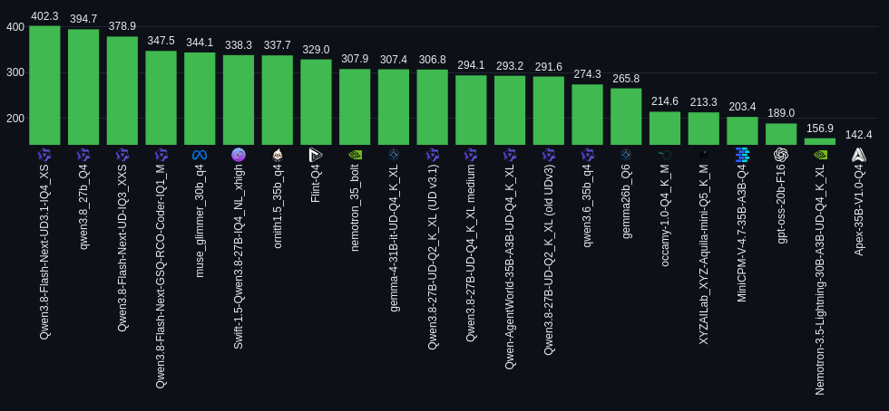
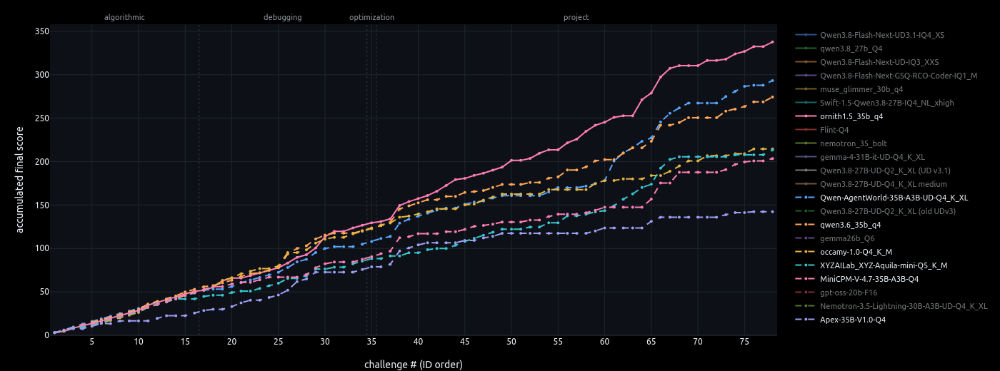
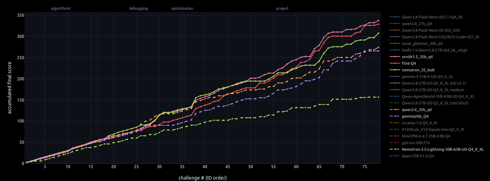
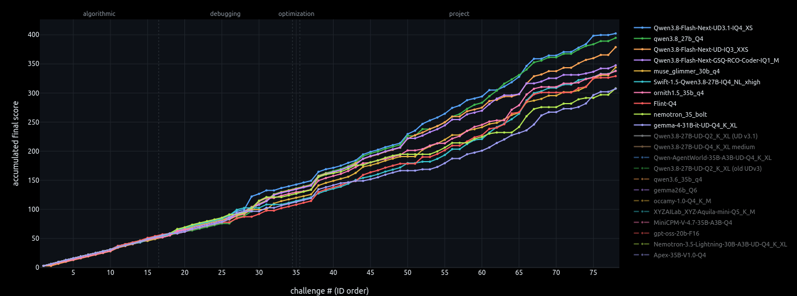
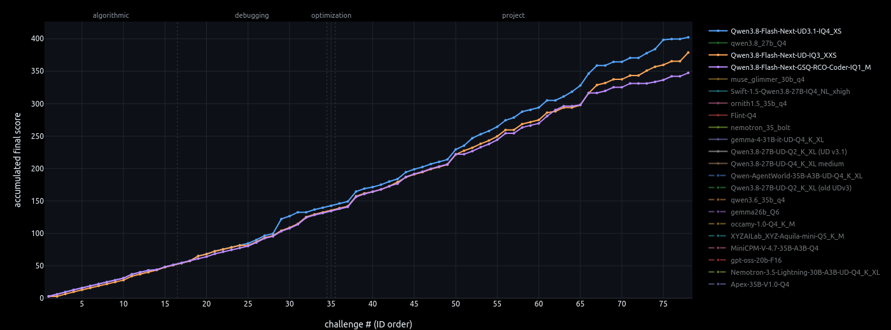
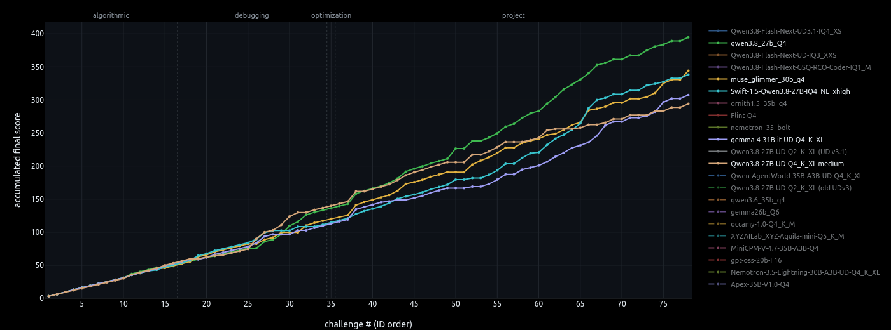
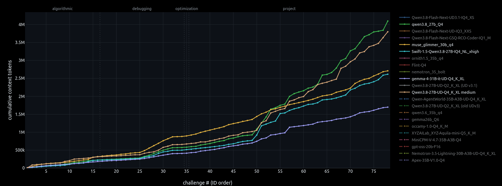
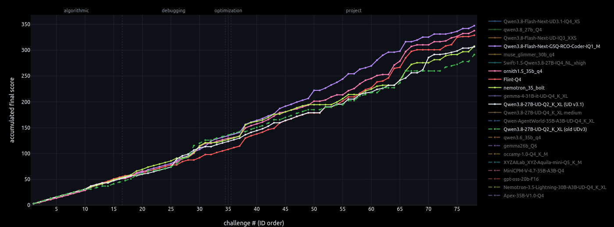
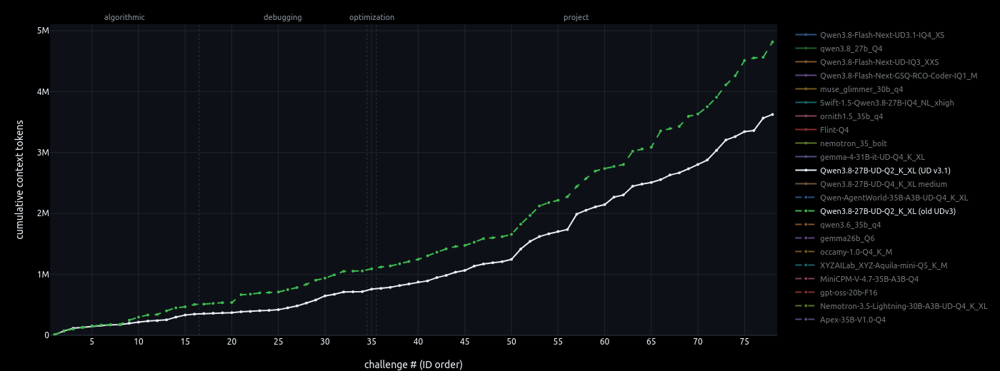
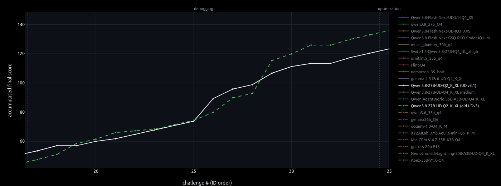

Intro#
The last year or so I have been fascinated by local AI. There is something magical and unreal in watching your own computer work on a problem on its own or using it as an interactive helper. Cloud AI, in my opinion, doesn’t have that same magic. It feels like you are handing the wheel to some external entity. In any case, I was looking for a way to measure the capabilities of models that are realistic to run on a gaming PC. Or to be more exact, testing the specific quantizations that one would run. I wanted also to understand which, if any of the fine tunes of Qwen 3.6 35B could be used as a replacement of the 3.8 MoE that we never got. Things escalated from there…

That’s right, I built my own LLM benchmark.
How did you build this?#
It is a mostly vibe coded harness to benchmark models. It is built around podman containers and pi. The agent works in pi, with 100k context (32k max output) and under a time constraint. It is given a network isolated container that only communicates with the host over a named pipe for accessing the llama.cpp server. The challenges are graded in another container based on hidden automated tests. The challenges consist mostly of Python and C++ code challenges around 3 major pillars. Pillar one is algorithmic challenges that ask for a solution to a leet-code style problem or for an implementation of a known algorithm. The debugging pillar consists of code snippets given that contain some bug. The challenge is to find and fix the bug. The fix is then tested by hidden unit tests. The final pillar is the implementation of some mini projects. These range from a mini SQL language or BigInt implementation to reverse engineering tasks or the duplication of the functionality of a utility that is provided. A full run takes about 10 hours.
My initial attempt started by just assigning MiMO v2.6 Flash with coming up with 100 different python and C++ challenges to work on. The challenges appeared …challenging. That assertion and my initial optimism did not survive testing. I guess all of the models are trained on the same basic challenges. Even very weak models could ace through them. I got a new degree of respect for even the very small models but a benchmark that most models ace is useless.
I put Gemma 4 E4B (an admittedly weak model for agentic programming) to attempt all of the challenges, then simply discarded any that it passed. A side effect of that is that my benchmark might be a bit biased against the Gemma 4 family. After that, I gradually built up again the challenges based on brainstorming mini project ideas and on adapting, with the help of GPT-Sol, recent CVEs that we would turn into challenges. I had to aggressively review the tasks for blatant giveaways that the models would leave behind in the prompts or in the public tests. Finally, not all tasks are made equal. So I weighted the tasks giving tasks with a lower pass rate, a higher score. This is a heuristic of course but it’s much better than counting all tasks equally.
Overall I am happy with the result. I think it correlates well with my own experience working with these models for coding tasks.
Did you find a Qwen 3.6 35B successor?#
Maybe. A Qwen 3.6 35B successor could be either a fine-tune of the original model or a spiritual successor. A spiritual successor would be a MoE model that is relatively easy to run, targets coding but does not necessarily follow the Qwen architecture.
Qwen 3.6 finetunes#
The summary of this is that Ornith 1.5 35B is the real deal. It’s one of the best third party fine tunes I found that clearly surpasses the original one and meaningfully delivers higher quality in this dataset.

Another model that surpasses the original in score and does better in more complex projects is Qwen-AgentWorld-35B. It has a lower overall pass rate than the original model, but it does much better in more complex full project scenarios. It is not supposed to be a coding focused model and it is somewhat inconsistent but it delivers some unexpected gains. It is also significantly less token hungry than the original model (43.3k vs 69.5k average tokens per task). It does not beat Ornith overall and I feel that for project level tasks one would most probably run a stronger, probably slower model.
All other fine-tunes (Occamy, Apex-35B-V1.0, XYZ-Aquila-mini, MiniCPM-V-4.7) and even Nex-N2.5-mini, which I started benchmarking but was doing bad enough in the first challenges that I aborted the run, underperform compared to the original model.
MOE spiritual successors#
In my quest I tested several alternative Mixture of Experts models. A common competitor is Gemma 4 26B. Gemma is known not to be very competitive in agentic coding against Qwen. One could also argue that filtering the dataset using Gemma 4 E4B puts it at a slight disadvantage as easy tasks for the Gemma 4 family have been removed. That does not really show up in the scores though. I wanted to give Gemma the best shot it could by running a Q6 quant. It is an excellent model for other tasks but in agentic coding it did not do well. It significantly underperforms compared to Qwen.
Flint is another model that got lots of hype when it was released. It outperformed Qwen 3.6 indeed and is roughly on par with Ornith. But it has a fatal flaw in my opinion that I find annoying. It is verbose and has a tendency to be inconsistent in simpler tasks. It is picking up score when more difficult project level tasks get in the mix. For these tasks I would probably use a dense model instead anyway.

Nemotron 3.5 Bolt 74B-A9B-24GB is at the other end of the spectrum and I would consider it an excellent replacement for Qwen 3.6 if it runs well on your hardware. The quantization magic that NVidia pulled here seems to work well. The model is relatively consistent in the simpler tasks and is well rounded. It clearly beats Qwen for me. As the tasks get more complex, it does not hold up but for these tasks I would use a slower dense model instead. That was a pleasant surprise for me as in my experience Nemotron models tend to be undertrained and usually underperform.
On the other hand Nemotron 3.5 Lightning 30B-A3B fell completely flat in agentic coding, getting beaten by the outdated gpt-oss-20b. GPT still has its place though as it is extremely fast and very token efficient. While Nemotron is clearly not a coding model, I believe it still has a trick up its sleeve for agentic coding. It is the only model here that has a native 1M token context window and is relatively context efficient. So it can be useful for compaction. I can take a long running session that is running in a proprietary model, compact it at near zero cost (or while being offline) and keep working with a local model.
Dense models and Qwen 3.8 Flash Next#
In my opinion, small MoE models are not yet reliable enough to be trusted with changes to a codebase you care about. The dense models and QFN (Qwen Flash Next) are getting there as long as you keep an eye on their changes and you stay in the loop. All of the dense models make it to the top 10 scores. Of the smaller MoE models only Nemotron 3.5 Bolt 74B-A9B-24GB, Flint and Ornith 1.5 35B make it to the top 10.

Predictably, Qwen3.8-27B-UD-Q4_K_XL (UD V3.0) and Qwen3.8-Flash-Next-UD-IQ4_XS (UD V3.1) dominate the scores with the flash model getting a slightly higher score but losing in the number of challenges passed. Going one step lower, the QFN UD-IQ3_XXX (UD V3.0) quantization falls to the 3rd position.
The surprise here is that the cut down version of QFN with half the experts removed that is runnable in a 32GB RAM config is not far behind. Qwen3.8-Flash-Next-Coder-GSQ-RCO-IQ1_M gets a very respectable 4th position.

Token efficiency is even better for gemma-4-31B (14.118 points/1k tokens) as well as Swift-1.5-Qwen3.8-27B (10.086 points/1k tokens). Swift looks like an excellent fine-tune well worth using.
Muse-Glimmer-30B has good token efficiency as well (9.897 points/1k tokens) while getting a good score overall. In my experience that model tends to be a bit lazy. But if you use it as a type of cruise control, to handle specific changes that you want to do, it works well.

Using the medium effort on Qwen3.8-27B does not seem to achieve a high token efficiency (6.035). Maybe the model would react differently when not being benchmarked. The score ends up lower than that of the more efficient dense models like Gemma, Muse and Swift. That cost seems to mostly affect the more complex challenges though.

Looking at the cumulative tokens used, it is evident that models react differently when faced with more difficult tasks. Some models scale up their token usage significantly while others remain flat. Gemma seems to be fairly consistently frugal. Muse glimmer spends more tokens but does not scale up its token usage significantly when the task is difficult. On the other hand, the Qwen family spends significantly more tokens for difficult tasks. Other models (eg. Flint, Nemotron Bolt and Ornith) have a similar behavior.
Qwen 3.8 27b on 16 gigs of VRAM#
An interesting question is if you only have 16 gigabytes of VRAM, if it is worth it to try to squeeze Qwen3.8-27B in your card, compared to running a MoE. For that I tried 2 different quants of Qwen3.8-27B-GGUF:UD-Q2_K_XL using a Q8_0 KV cache quantization in order to fit the context in the VRAM. (All other tests were done with 16Bit KV cache). The only difference between these was that one was using the older unsloth UD-V3.0 quantization method while the other one was using the updated V3.1 method.
The answer seems to be negative. Both quantizations score below multiple MoE models. Both Ornith and Flint scored higher while Nemotron Bolt scored a little lower due to losing in high difficulty challenges but is more consistent in the easier ones.

It is remarkable that the newer quantization method, scored higher though. An even more significant difference was in the tokens spent between quantization methods.

The tokens spent by the newer quantization method are about 25% less! So whatever unsloth did, it clearly made a difference. I imagine that the differences between other quantization methods may be even more dramatic.
The data suggests that the higher token spend of lower-quality quantizations might actually pay off in certain debugging tasks that require more exploration. It might be just measurement noise though.

My picks#
Agentic Coding or Medium/Long Horizon tasks#
If you have >= 24GB VRAM, I would pick Qwen 3.8 27B. You get excellent coding ability with your CPU and RAM remaining usable for you or the harness. An equally solid choice and in fact the only good choice if you have < 24GB VRAM is Qwen 3.8 Flash Next. Pick the quantization level that will fit your RAM. The coder variant is still good. If you have neither the VRAM nor the RAM for anything better, run Ornith-1.5-35B.
Interactive Agentic Coding#
For easier tasks or tasks where you want interactivity and you can micromanage the agent, I would prefer Swift-1.5-Qwen3.8-27B, gemma-4-31B, Muse-Glimmer-30B, Nemotron-3.5-Bolt-74B. Qwen3.8-Flash-Next-GGUF is even better if you have plenty of RAM or you have a separate inference system and you are ok with dedicating that full system to the LLM. Swift-1.5 Flash Next I have not tested but I expect it might fit well in this role too. These should be relatively reliable implementors, code reviewers or collaborators and each one has their own strengths.
Interactive exploration#
Discussing ideas, interactive implementation of ideas, one-off scripts, code exploration and experimentation or targeted contained refactorings. Here the tasks should be easy but interactivity is more important. Code quality is less important. For this category I would choose Nemotron-3.5-Bolt-74B, Ornith-1.5-35B or Flint.
Summarization#
For summarization, discussing code or writing documentation based on the code, an interesting option would be gemma-4-26B-A4B. The main advantage of this model is that it is intelligent enough to understand and explain or document code. It writes excellently in a way that is more natural and easier to read and is fast to respond.
I would also keep a copy of Nemotron-3.5-Lightning-30B-A3B around for compacting sessions.
Closing thoughts#
It’s remarkable how far we’ve come. I would not have thought 1 year ago that we would have all these capabilities in a gaming PC. It really pays off to have a small private benchmark to systematically measure these systems. Poking with these relatively small but still incomprehensibly complex systems makes me feel a little bit like a biologist is dissecting insects or single cell organisms to understand their behavior and mechanisms. I am looking forward to the Qwen 4 release so that I can test it and measure it against the existing lineup. Stay tuned :-).